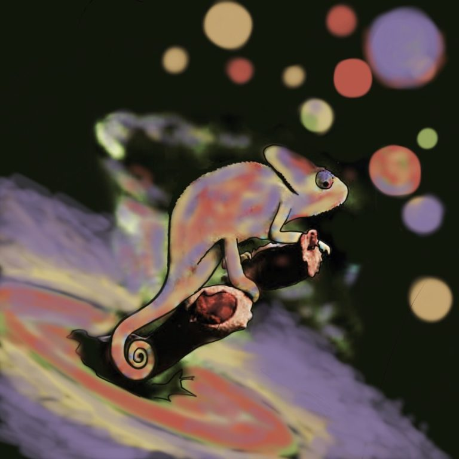
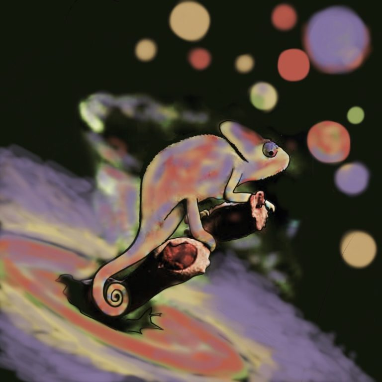
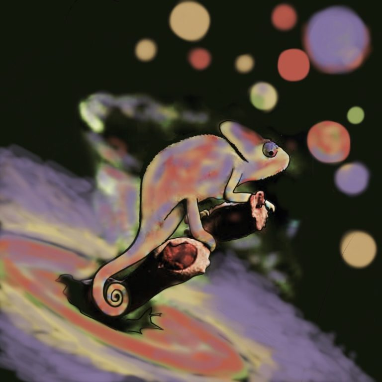

Beatriz Campos Estrada
Exoplanetary Science PhD Fellow
Niels Bohr Institute & University of St. Andrews
CHAMELEON Marie Curie Innovative Training Network
 

Exoplanetary Science PhD Fellow
Niels Bohr Institute & University of St. Andrews
CHAMELEON Marie Curie Innovative Training Network


Van Eylen, Vincent; Astudillo-Defru, N.; Bonfils, X.; Livingston, J.; Hirano, T.; Luque, R.; Lam, K. W. F.; Justesen, A. B.; Winn, J. N.; Gandolfi, D.; Nowak, G.; Palle, E.; Albrecht, S.; Dai, F.;
Campos Estrada, B.; Owen, J. E.; Foreman-Mackey, D.; Fridlund, M.; Korth, J.; Mathur, S. Forveille, T.; Mikal-Evans, T.; Osborne, H. L. M.; Ho, C. S. K.; Almenara, J. M.; Artigau, E.; Barragán, O.; Bouchy, F.; Cabrera, J.; Caldwell, D. A.; Charbonneau, D.; Chaturvedi, P.; Cochran, W. D.; Csizmadia, S.; Damasso, M.; Delfosse, X.; De Medeiros, J. R.; Díaz, R. F.; Doyon, R.; Esposito, M.; Fűrész, G.; Figueira, P.; Georgieva, I.; Goffo, E.; Grziwa, S.; Guenther, E.; Hatzes, A. P.; Jenkins, J. M.; Kabath, P.; Knudstrup, E.; Latham, D. W.; Lavie, B.; Lovis, C.; Mennickent, R. E.; Mullally, S. E.; Murgas, F.; Narita, N.; Pepe, F. A.; Persson, C. M.; Redfield, S.; Ricker, G. R.; Santos, N. C.; Seager, S.; Serrano, L. M.; Smith, A. M. S.; Suárez Mascareño, A.; Subjak, J.; Twicken, J. D.; Udry, S.; Vanderspek, R.; Zapatero Osorio, M. R.
1. Testing exoplanet evaporation with multitransiting systems
Owen, J.E.; Campos Estrada, B.